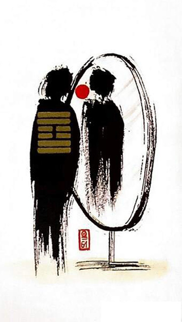

풍택중부
소길 13
풍/택 : 연못에 바람, 미쁠 부 -> 믿음, 신뢰
신용과 믿음성이 있는자는 반드시 돈돈함을 실행한다거울을 보듯이 두 사람이 서로를 바라보고 있다진심으로 마주하고 속마음이 잘 통하며 내면을 꿔뚫어보는통찰력을 얻는 상황을 표현한 그림
신용.믿음.성실.본심.참된 자아.내적인 진리.마음의 지혜.참된 지혜.통찰력.깨끗하고 맑음.의식.자각.직관적인 지식.줄탁동시.정신적인 성장.깨달음.직감.영감.사람으로 인한 성공과 행복
연애운
진실된 인연.영혼의 단짝.강한 믿음과 신뢰
사업운
사람으로 인해 찾아온 기쁜 소식.귀인의 도움 (학업운 - 혼자 독학하는것 보다는 멘토, 선생님 만나서 공부하는게 더좋음)
속마음
썸정신적으로 통한다고 생각하는 마음.잘맞는다고 생각하는 마음
1년 이상진실된 인연이라고 생각하는 마음.믿고 신뢰하는 마음
이별 후상대방만 바라보며 재회하고 싶은 마음
솔로연애운
새로운 이성 생길 확률 높다
건강운
고열.신장.혀로 오는 병 주의.시력장애